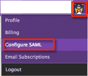
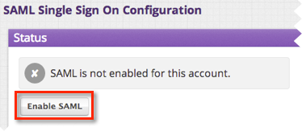
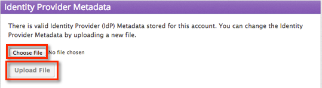
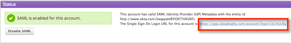

This setup might fail without parameter values that are customized for your organization. Please use the Okta Administrator Dashboard to add an application and view the values that are specific for your organization.
Copy and save the following IdP Metadata show below with the filename metadata.xml.
Sign into the Okta Admin dashboard to generate this value.
Log in to Datadog at https://www.datadoghq.com with your administrative credentials.
Select the Datadog icon in the upper right, and then, select Configure SAML in the menu that appears, as shown below.

Select Enable SAML, as shown below.

In the Identity Provider Metadata section, select Choose file and navigate to the metadata.xml file you saved in step 1, as shown below. When the file name appears, select Upload File.

Note the Single Sign On Login URL to use for authentication that is shown in the Status section.

Done!
DataDog only supports SP-initiated SAML. For the convenience of your end users, Okta recommends that you hide the Datadog app and set up a Bookmark app with the Datadog logo. For instructions on setting up a Bookmark app and hiding the original app, see Simulating an IDP-initiated Flow with the Bookmark App.
Note: Just In Time Provisioning (JIT) is not supported.